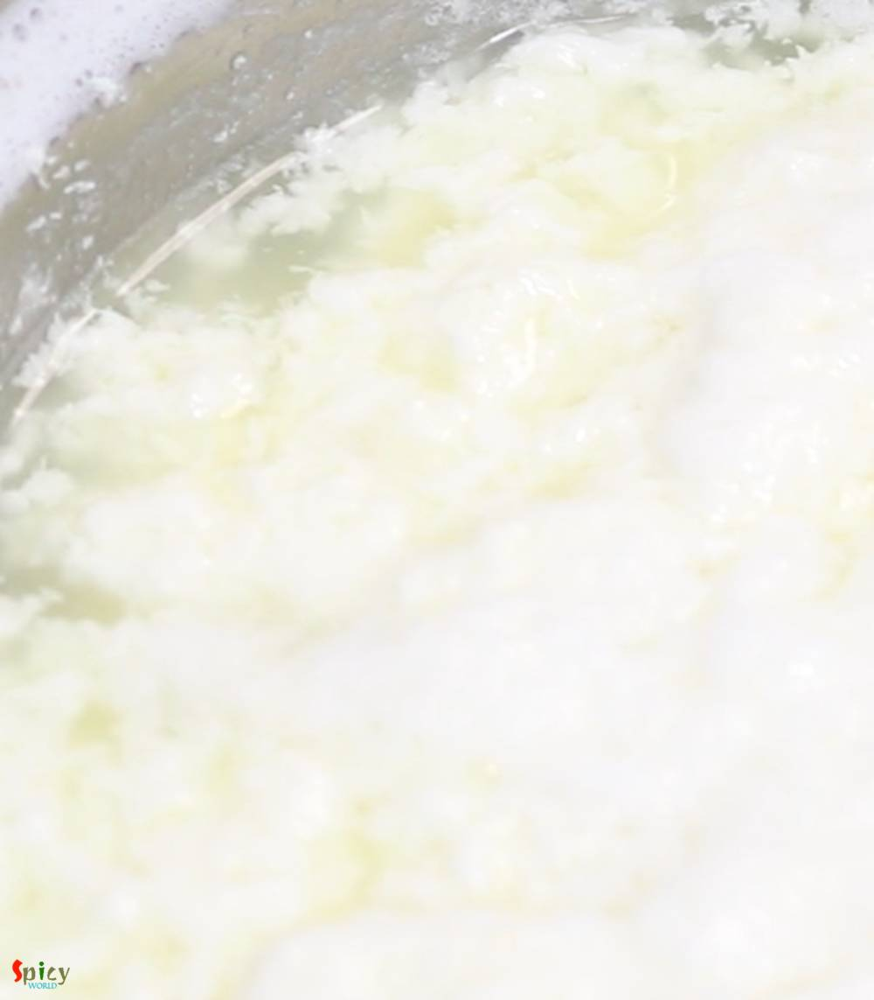
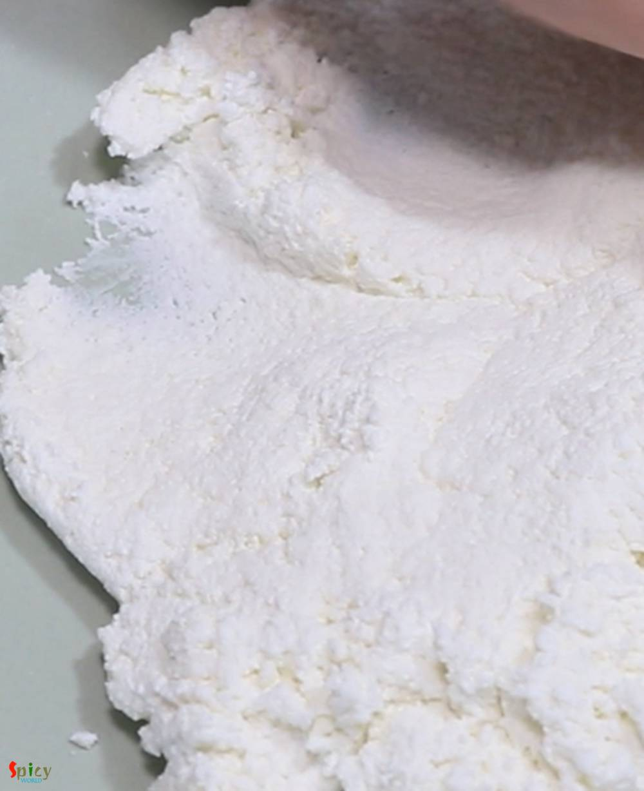
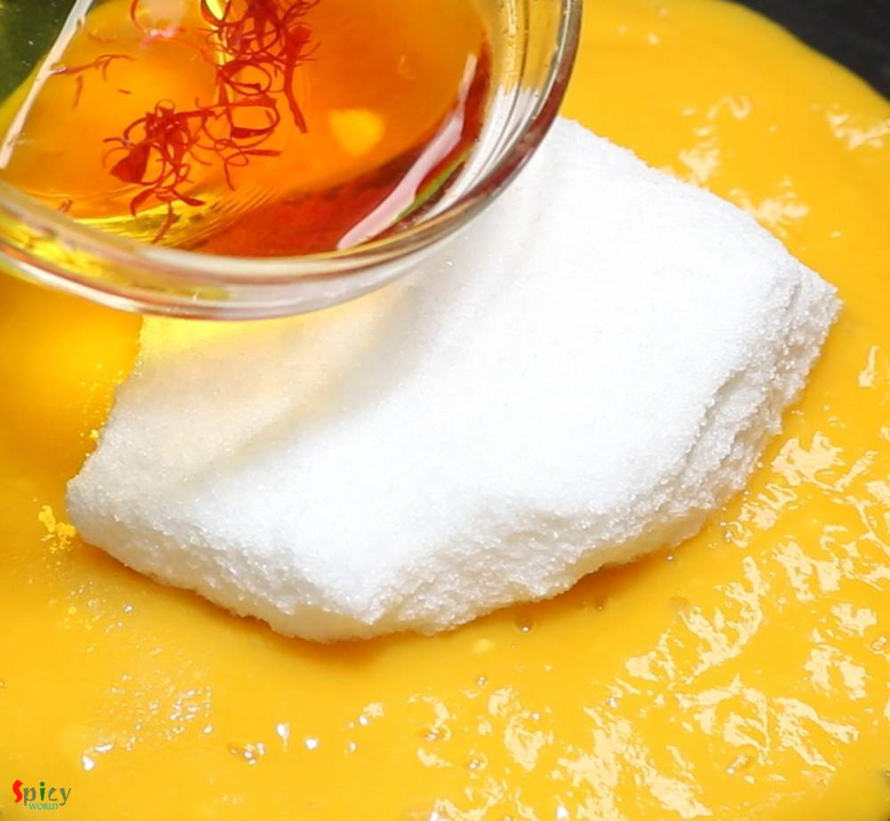
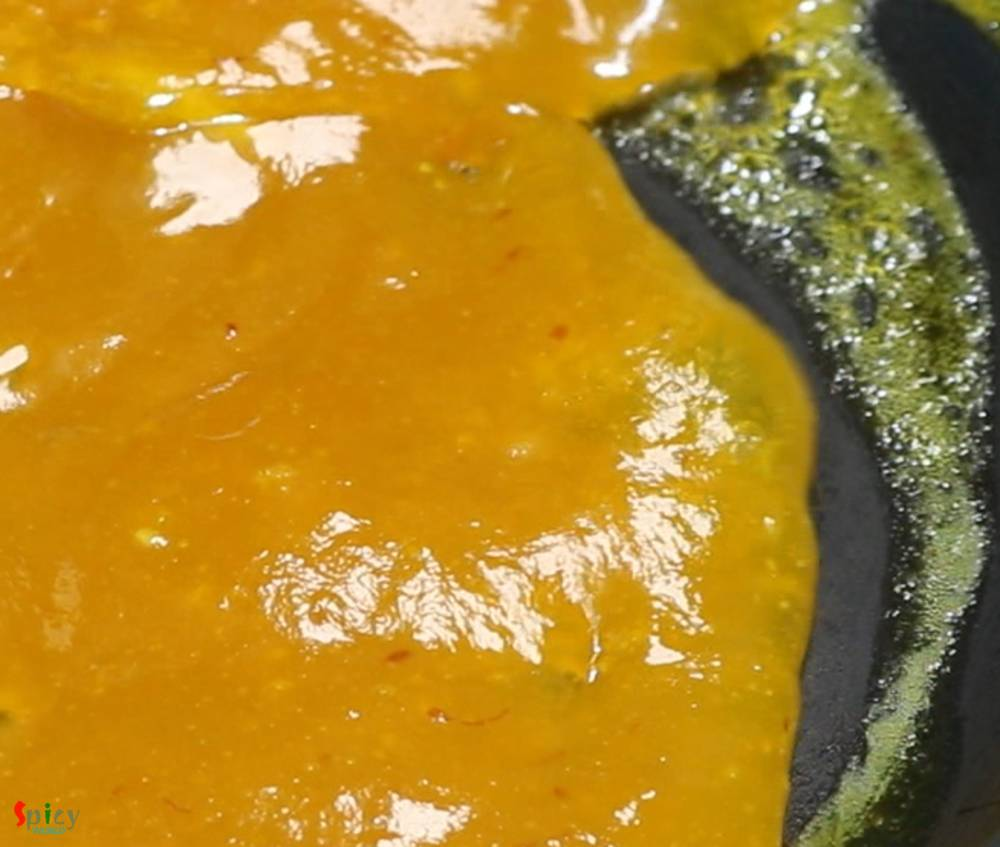
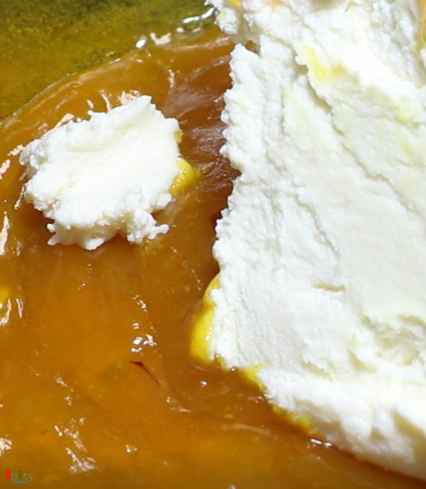
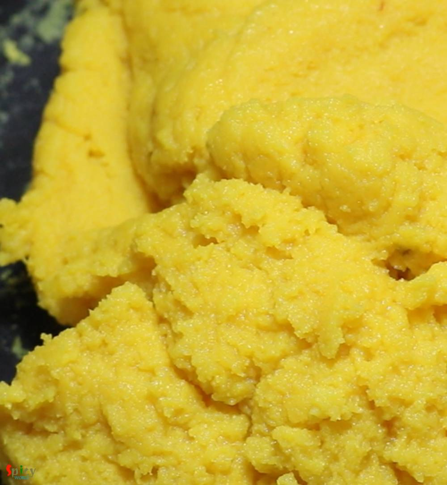

Simple and Easy Recipes
Mango Sandesh / Aam Sondesh
© 2016 Spicy World, Published on: Mar 26, 2019
Can you imagine summer without mango? Mango is one of my favorite fruit with which you can make so many things like Yogurt, Ice cream, Phirni, Kheer, Cake, Cheesecake and what not. This season I made Mango Sondesh, taste and texture came out really good. You can make them with Ricotta cheese also, in that case add some milk powder as ricotta cheese is much thinner than Paneer. Mango pulp is going to give the Sandesh very refreshing and nice aroma. For color I have used saffron. Try this simple recipe in your kitchen and let me know how it turned out for you.

Ingredients
- 2 liters of full fat milk.
- 5-6 Tablespoons of yogurt or curd or 4-5 Tablespoons of lemon juice.
- Smooth pulp of 2 sweet mangoes.
- Half cup of sugar.
- 1 Teaspoon of saffron.
- 2 green cardamom or 1 Teaspoon of cardamom powder.
- Some chopped pistachio.


Steps
Heat milk in a saucepan.
When the milk starts bubbling, add yogurt or lemon juice. Stir well and turn off the heat.
The milk will curdle within few minutes. You will see the paneer or chena.
After few minutes strain it in cotton lined strainer.
Wash paneer with cold water, then press gently with your hand to remove excess water.
Hang the cloth with kitchen tap for 30 minutes. Paneer should not become very dry.
Then take paneer out in a palte and start kneading gently.
After 4-5 minutes paneer will become very smooth. Do not knead it with pressure as paneer will loose its oil.
In a non stick pan, add mango pulp, sugar and saffron soaked water and green cardamom.
Mix on medium flame for 15 minutes.
After 15 minutes, mango sauce will become thick and silky.
Now add the kneaded paneer, mix well. If you are using Ricotta cheese, add in 3 pounds of it now with half cup of milk powder.
On very low flame, stir the mixture in every 2 minutes.
First paneer will become little liquidy, but after few minutes of stirring it will gradually become thick.
When the paneer will start leaving the pan, like a dough turn off the heat.
After few minutes, take the mixture out in a plate.
Take a small lemon size portion from the mixture and start rolling within your palm. Give it any shape of your choice.
You will get 10-12 medium sized Sandesh. Garnish them with chopped pistachio.
Your Mango Sandesh is ready to serve.
Serve this chilled ..
")